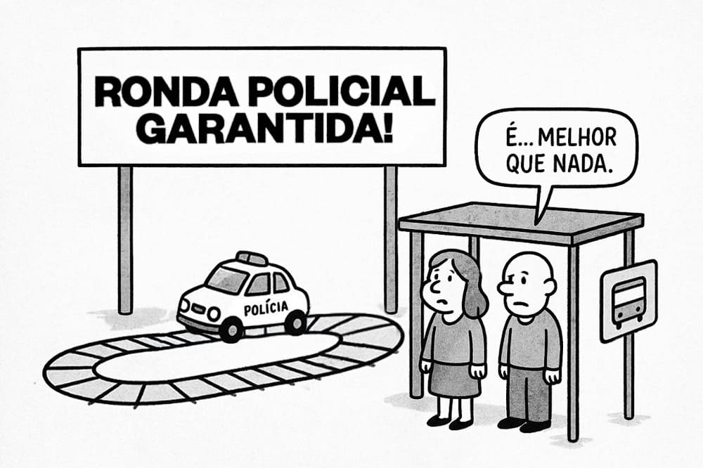
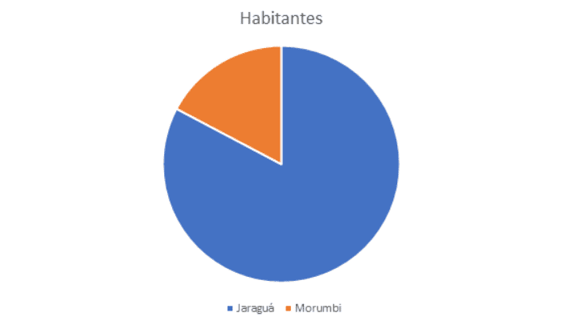
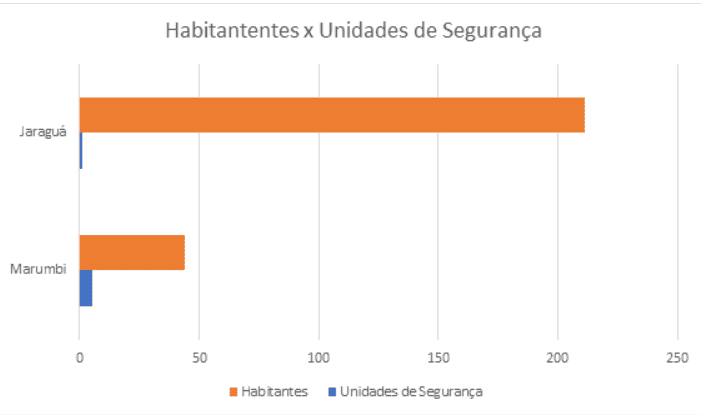
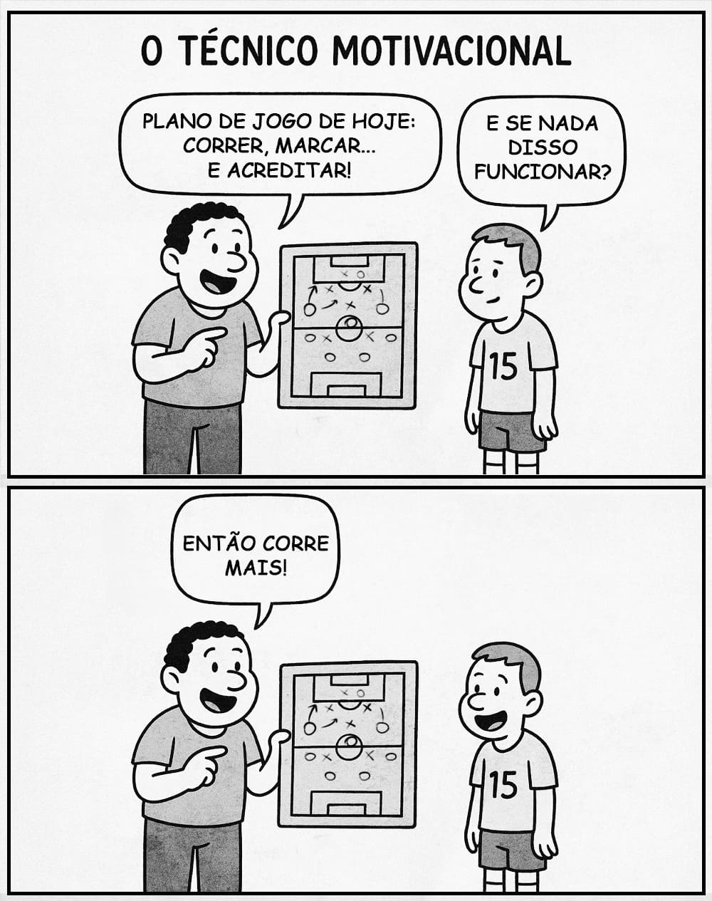
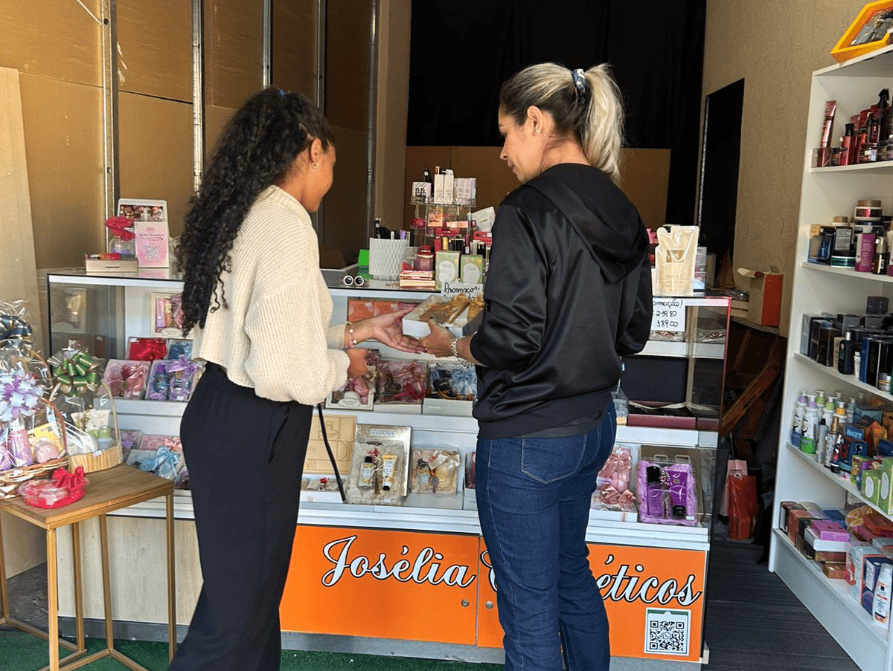
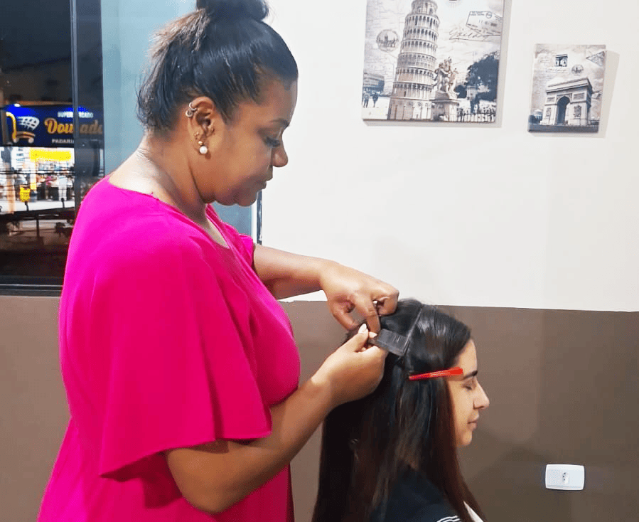
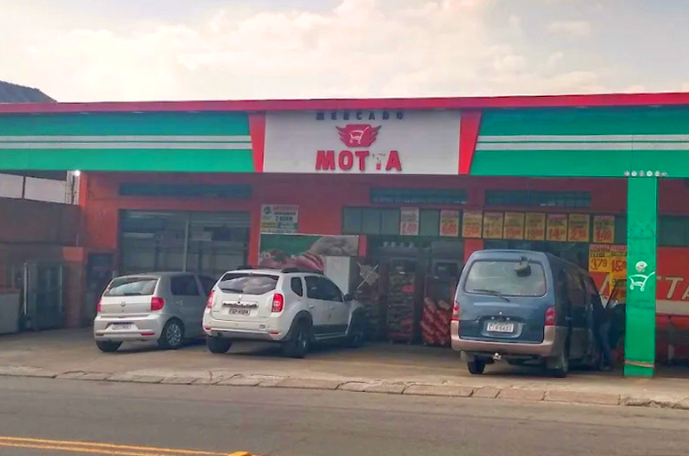
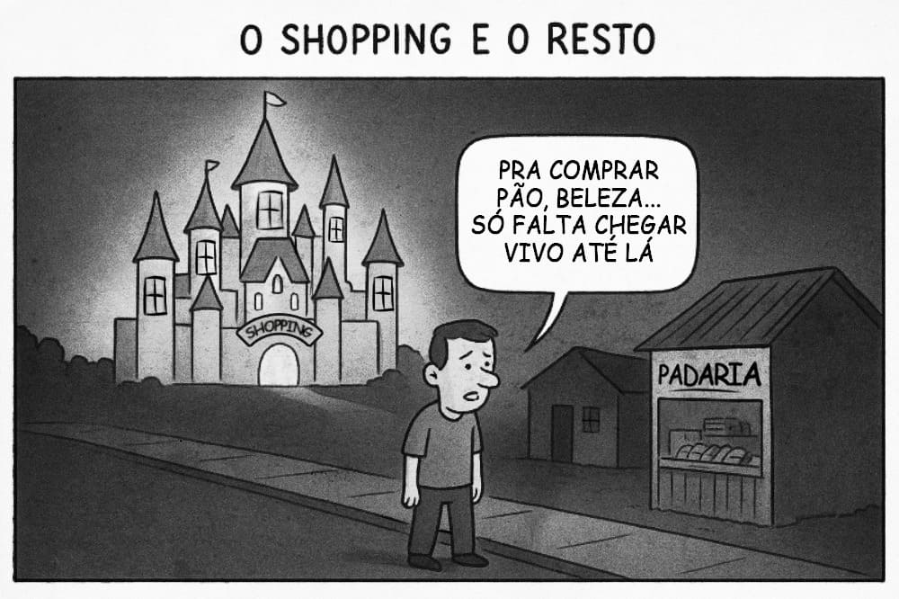

PERFIL | FUTEBOL
Várzea, o coração do Jaraguá
Conheça a história de Denílson Félix e o legado do time Unidos do Morro de Santa Marta.
JORNAL DO JARAGUÁ
O cotidiano retratado pelos moradores da região do Jaraguá revelando seus principais desafios.
Em uma região cada vez mais habitada pela sua expansão vertical, alguns pontos têm preocupado os moradores do Jaraguá, bairro da zona noroeste de São Paulo, começando pela segurança, que tem se tornado um tema frequente entre os moradores. O conceito da palavra “segurança” diz que é o estado, qualidade ou condição de quem ou do que está livre de perigos, incertezas, assegurado de danos e riscos eventuais; situação em que nada há a temer. Definição essa que os moradores da região, relatam não viver e não se sentem seguros atualmente, a sensação de vulnerabilidade entre os moradores têm aumentado nos últimos anos devido ao crescimento dos relatos de furtos e roubos, outros crimes e a ausência constante de policiamento na região.
Tendo o entendimento de segurança, Sandra Regina, 61 anos, moradora do bairro há 5 décadas responde, quando questionada se ela se sente segura andando pelo bairro durante a noite, e diz: “Eu não, nem de carro; até de carro eu tenho medo.” Ela relata que, há um tempo, foi assaltada na frente de casa enquanto guardava o carro na garagem. Contou ainda que havia um posto policial no bairro de Ipanema, que foi fechado, mas que havia ido até lá; que ligou para o 190 (número da Polícia Militar) pedindo ajuda e não recebeu uma viatura da polícia em sua residência. Resume essa situação dizendo: “Tive que me virar sozinha.”
A mesma pergunta foi feita a Felipe Gomes, 21 anos, morador do bairro desde que nasceu, respondeu: “Nem um pouco. Já presenciei situações de extrema violência e perigo na região e até mesmo na porta da minha casa.” Ele complementa: “O policiamento aqui é falho e, quando tem, é esporádico. À noite fica pior e a atenção tem que ser redobrada.”
Sandra, relata a frequência do policiamento de rondas na região como “bem ruim”. Já Felipe, reforça quando perguntado sobre a frequência de ronda policial: “Infelizmente não, quase não vejo, uma vez ou outra”, retratando a presença da polícia como rara. A diferença entre os dois está na idade; a perspectiva, a visão e o medo de ambos, porém, são iguais mediante a ausência de segurança no bairro.
Outros moradores relatam como se sentem inseguros e destacam a ausência de policiamento na região. Mariana Casteliano e Juan Oliveira, 41 e 21 anos, respectivamente. Mariana, moradora há seis anos da região, diz: “Não me sinto segura andando pelo bairro, principalmente à noite, pois sempre tem assaltos.” Quando perguntada sobre a presença do policiamento, responde: “No tempo em que eu estava morando no bairro, só houve uma vez e por um período; depois, não vi mais.” Já Juan também diz que não se sente seguro andando pelo bairro à noite, pois, por onde passa, existem problemas com a iluminação e raramente vê a presença de policiamento, evidenciando ainda a vulnerabilidade causada pelas ruas pouco iluminadas em seu trajeto.
Os números de ocorrências apresentados pela Secretaria de Segurança Pública (SSP) sobre o 74º Distrito Policial - Jaraguá em 2025 registraram, até setembro deste ano, o total de 1.427 (um mil quatrocentos e vinte sete) casos de furtos, o que dá em média, cinco casos por dia, a mesma média do ano anterior no mesmo mês.
André Ferreira, 40 anos, morador há 34 anos da região, também comenta que o policiamento é pouco, e finaliza dizendo: “Por não ter uma base mais próxima” , ainda sobre como se sente em relação à segurança, diz: “Não, na fase que está o Brasil, não há ordem no país.” Reforçando, assim, as mesmas perspectivas dos demais entrevistados, visão e medo.
Recentemente, no bairro a Policia Militar resgatou dez trabalhadores em condições análogas à escravidão. O galpão que funcionava de forma irregular, na Rua Carlo Pallavicino, mantinha as vítimas em situação desumana. A família que realizou a denúncia contou que vieram ao Brasil com a promessa de um emprego, mas ao chegar a vítima foi submetida a condições precárias e restrição de liberdade. De acordo com a PM, a mesma relatou que obteve da vítima a informação de que ao chegar no aeroporto teria sido dopada e perdeu a consciência, retornando apenas já na região do galpão. A denúncia foi feita pela própria família da jovem. Este caso foi registrado no 72º DP - Vila Penteado, região da Brasilândia, zona norte de São Paulo, conforme mostram os dados do portal da Secretaria de Segurança Pública (SSP) registra até setembro 2025, o total 806 casos de flagrantes lavrados, em média 3 casos por dia.
A responsabilidade pela garantia de segurança, é um dever do Estado. Quando o Estado falha em oferecer serviços essenciais, como policiamento efetivo e recorrente, iluminação pública, pontos citados pelos moradores, ele descumpre seu papel fundamental e deixa a comunidade à mercê da própria sorte. Em abril, deste ano, a subprefeitura do Jaraguá, através de uma audiência pública, propôs intervenções urbanas, visando a melhoria do bairro, entre elas, existe apenas uma intervenção para a segurança, a implantação de uma ronda policial nos pontos de ônibus na região do Jaraguá e da Estrada de Taipas.
Efetivamente, vemos que a segurança do bairro, não é um tema que apresenta tanta preocupação do Governo do Estado e da Subprefeitura, uma vez que apenas uma das nove propostas aplicadas está voltada a segurança, as ações são limitadas. Refletir sobre o tema da segurança no Jaraguá acaba necessariamente levando a outro tema fundamental para a rotina da população: a mobilidade.
Por sua vez, a mobilidade urbana, dentro de uma região impactada pela expansão de linhas de trem e futuras linhas de metrô, e consequentemente vem aumentando o número da população da região, divide algumas opiniões de sua eficiência e suficiência, mas, todos tem conhecimento sobre a existência de desafios constantes, como dificuldade na integração entre as linhas de ônibus, constante falhas na linha 7 - Rubi da CPTM, que atende ao Jaraguá. A principal queixa são as longas esperas pelo transporte coletivo terrestre e férreo.
André, acha o transporte público suficiente e eficiente, mas explica que o transporte térreo ainda tem algumas dificuldades em algumas linhas, pelo tempo de espera e quantidade de de ônibus e o transporte férreo, acha que é mais eficiente, mas, muito cheio inclusive fora dos horários de pico que e relata que poderia ter intervalos menores.
Juan, também acha que o transporte é suficiente e eficiente, informa sobre o aumento de ônibus em linhas, mas concorda que ainda existem linhas que demoram um pouco mais.
Mariana, comenta que não acha o transporte público nem suficiente e nem eficiente e complementa: “a quantidade de pessoas só aumentaram e a distância para pegar a condução leva uns 15 minutos andando.
Sandra, compartilha da mesma opinião que Mariana, e complementa: “O bairro cresceu muito. Há 50 anos era bom, mas hoje não dá conta. Criaram mais uma estação, a vila aurora, além do jaraguá, mas, a população aumentou demais, porque é um bairro com loteamentos mais baratos. Deveria ter mais ônibus, mais trens, principalmente nos horários de pico. As linhas de ônibus são poucas: tem para o Terminal Pirituba, Paysandu e praça Ramos, só. Então acho que o transporte precisa melhorar bastante.
No início de novembro, de 2025, os moradores do bairro criaram um abaixo-assinado solicitando ao prefeito de São Paulo, Secretário(a) Municipal de Mobilidade e Trânsito (SMT), e Diretoria da SPTrans (São Paulo Transporte S.A.) com urgência a implantação ou prolongamento de linha de ônibus ligando o bairro city jaraguá (retão) ao centro de são paulo, alegando justamente o mesmo problema de integração entre o bairro e em especial a região Central. Essa petição só tem até o momento 2 assinantes.
No bairro, existem 2 estações de trem, a estação Jaraguá e a estação Vila Aurora, ambas da linha 7 da CPTM, o intervalo de trens em horário de pico e maior movimentação, varia de 4 - 6 minutos, já fora do horário de pico, pode levar em média 15 minutos. De julho de 2025 até outubro, foram registrados 17 dias de falhas sistêmicas, entre elas a prejudicação da via por atos de vandalismo pelo furto dos cabos da via.
A Prefeitura compartilha a responsabilidade pela mobilidade urbana junto ao Governo do Estado, em abril deste ano, a subprefeitura do Jaraguá, através da audiência pública,citada sobre a intervenção de segurança, propôs intervenções para a mobilidade urbana. Entre elas: Implantar o metrô até o Jaraguá , Pirituba e Taipas, regiões próximas. Através da parceria da Prefeitura e do Governo do Estado; Construção de ciclovia da Estação Jaraguá (CPTM) até o Pico do Jaraguá.
A subprefeitura do Jaraguá/Pirituba recebeu em janeiro do ano passado, o então prefeito do estado de São Paulo, Ricardo Nunes, porque a região receberia R$490 milhões de reais, como investimento para melhorias no bairro, incluindo a construção de um complexo viário para ligação entre o bairro do Jaraguá e a região da Lapa, região comercial bastante movimentada.
Dentre os pilares do cotidiano dos moradores, o comércio local foi o melhor apresentado, algumas opiniões divergem, devido a localização que residem dentro do bairro. Embora haja opiniões divergentes quanto à distância de certos estabelecimentos, a maior parte dos moradores reconhece o comércio do bairro, em oferecer produtos e serviços essenciais, facilita a rotina diária e fortalece o vínculo da comunidade com a região, além de contribuir para o desenvolvimento econômico local. mas o comércio na região tem atendido as necessidades do dia a dia.
Os entrevistados Juan, Mariana e Felipe concordam que os comércios do bairro atendem as necessidades dos moradores, destacam o Cantareira Norte Shopping, redes de supermercados, lojas em geral, farmácias e mercados menores.
Já Sandra, não sente essa mesma facilidade no comércio “Onde eu moro não tem comércio, só uma “vendinha”. O maior comércio é no Ipanema, perto da estação Jaraguá. O problema é a falta de bancos, só tem o Bradesco. O melhor ponto comercial é o Ipanema, mas é longe da minha casa. De carro é fácil, mas a pé é subida. Então, o comércio da região onde moro é bem fraco” disse ela.
O preço dos produtos da região não tem agradado a todos os moradores, Sandra relata que por ser um bairro mais simples, os preços são altos e André, reforça a ideia de que “não tem uma rede e os menores impõem os preços que eles querem por não ter concorrência”
Juan, Felipe e André, destacam o Cantareira Norte Shopping e o Pico do Jaraguá como um comércio bem conhecido do bairro.
O Pico do Jaraguá, famoso ponto turístico não só do bairro, mas, de toda a cidade é a parte mais alta, localizado dentro do Parque Jaraguá, uma área adquirida pelo governo estadual em 1940, mas, só em 1961 foi transformado em parque, a fim de preservar a área em torno do Pico do Jaraguá, em 1994, foi considerado pela UNESCO, Patrimônio da Humanidade, integrante da Reserva da Biosfera do Cinturão Verde de São Paulo.
O parque oferece trilhas de baixa e média complexidade e estrutura de recepção a visitantes, tornando-se não apenas um espaço de lazer, mas também de educação ambiental. Já o Pico, foi transformado pela Prefeitura de São Paulo, como ponto turístico em 1946.
O Pico, é visível de diversos pontos da capital, é o ponto mais alto da cidade, chegando a 1.135 metros. Para subir e apreciar a bela vista da capital, há duas formas: Com o uso de veículos próprios, pela via Estrada Turística do Jaraguá, via asfaltada ou caminhando pela Trilha do Pai Zé, que atravessa ou passa por áreas próximas à aldeia, onde vivem os Guaranis Mbya.
Há duas grandes antenas, sendo uma de televisão, compartilhada por 3 emissoras: TV Globo São Paulo, TV Bandeirantes São Paulo e TV Cultura, que pagam pelo aluguel do espaço e antenas de transmissão em micro-ondas, usadas para comunicação de bancos com as agências do Interior. Das emissoras de rádio, a USP é uma das que mantém sua antena instalada no Pico. Com seus 1.135 metros de altura, é o lugar mais alto de nossa cidade onde várias TVS estão com seus sistemas de transmissão. e junto à antena de televisão, existe uma grande escadaria que permite subir ainda mais, ladeada por um bondinho que se destina ao transporte de pessoas e materiais para manutenção da antena.
Além de pequenas instalações comerciais e locais destinados a estacionamento de veículos e uma visão principalmente da parte oeste da Grande São Paulo, também pode ser avistado o Rodoanel Mário Covas, na parte posterior.
No Parque Estadual do Jaraguá (SP), o comércio é extremamente restrito, por se tratar de uma unidade de conservação. Dentro do parque, não há tantas opções de comércios para comidas e bebidas, o parque é mais voltado para área de lazer, mas, possui 21 quiosques com churrasqueira para piqueniques, encontros, confraternizações e etc. Aos domingos, encontram-se alguns vendedores ambulantes com algumas opções de comidas rápidas, como pipoca, hot-dogs e temos uma feira para venda de artesanatos, de comércio físico, existe uma opção, que é uma lanchonete, localizada na parte baixa do parque. O funcionamento é das 7h às 17h todos os dias, o acesso ao parque, às trilhas e subir ao Pico do Jaraguá é totalmente gratuito, junto com o estacionamento que também não é cobrado.
Considerando toda a história do parque, sua riqueza ambiental e cultural onde muitas pessoas vão a conhecer, a passar seus finais de semana com família e amigos, também é palco de boas histórias,faz parte da identidade de quem vive na região, muitas histórias foram construídas e continuam sendo lembradas com carinho.
“Uma das maiores histórias pessoais que tenho, foi no pico do Jaraguá. Esse local que é visitado por milhares de pessoas todos os finais de semana, me deu o prazer de ter o maior e melhor passeio ciclístico da vida. Ao subir o pico de Jaraguá de bicicleta, você consegue acompanhar a fauna e a flora de uma maneira totalmente compatível, como se estivesse na Serra do Mar, local que hoje é proibido descer ou subir de bicicleta. E a subida é uma das coisas mais demoradas e deliciosas por poder parar em nascentes, dar comida para os animais, ver até tucanos. E claro que ao chegar na parte das antenas a visão é simplesmente fantástica, de toda a cidade de São Paulo além do município de Osasco. Mas para quem gosta de adrenalina, o melhor de tudo é a descida que é algo simplesmente incrível, e justo no dia que eu testei pela primeira vez meu velocímetro de bicicleta, cheguei a 112 km por hora descendo, com aquele vento maravilhoso no rosto e adrenalina a mil por hora. E tudo isso com as minhas filhas, cada uma em sua bicicleta, e aproveitando cada minuto” disse Marcelo Camargo, 46 anos, assessor de gabinete da subprefeitura e residente do bairro desde que nasceu.
Destacamos a profissão atual do Marcelo, pois como assessor ele nos traz mais uma história que viveu em seu âmbito profissional no mesmo local, infelizmente não é uma história com um início e motivo tão bom quanto a sua história pessoal. Ele conta que foi atender a um descaso com uma pessoa com deficiência física que foi barrado de subir na antena do Pico do Jaraguá, no ponto mais alto.
“Todos nós sabemos que lá no alto, existe um bondinho que leva os funcionários para o ponto mais alto do pico no pé da antena, e um cadeirante, que fez uma promessa para sua mãe de que ele deveria subir até o ponto mais alto. Pois bem, também sabemos que o bondinho é apenas para funcionários, porém ele fez apenas uma solicitação para subir por ele, e foi negado pelos funcionários, até aí tudo bem. Porém ao não ser permitido a sua subida, ele resolveu subir de joelhos pois era uma promessa, e mesmo assim os funcionários o barraram. Aí as coisas começaram a ficar estranhas, pois eles não podem proibir isso, sendo assim fomos acionados e precisamos resolver a situação mediante a secretaria do meio ambiente”.
Esse episódio reforça a importância de projetos sociais voltados à inclusão e ao acesso igualitário aos espaços públicos, pois situações como essa revelam como barreiras físicas e institucionais ainda limitam direitos básicos. Iniciativas que promovem conscientização, treinamento de equipes e implementação de políticas acessíveis são fundamentais para garantir que histórias como essa não se repitam.
Apesar dessa fatídico episódio contado pelo Marcelo, o local ainda é um dos principais pontos turísticos da cidade, como assessor da subprefeitura, Marcelo nos conta que: “Infelizmente, não vejo muito futuro, pois com o tempo deixará de existir principalmente por estar em um local muito bem requisitado pelas grandes empresa.” Se referindo a expansão territorial, apesar de ser um patrimônio, ele conta que “Hoje, devido a ter grandes empresas se apropriando do território, e com acordos de troca e etc..., temos pouco o que fazer para preservação.”
A maior força viria da própria comunidade, Marcelo reforça, nos respondendo, quando perguntado sobre como a população pode participar ativamente da preservação dos patrimônios? “A população seria a salvação para nossos patrimônios, porém não existe uma comunicação efetiva para que tais coisas aconteçam. Mas eu acredito que se unirmos forças entre a tecnologia e vontade da população, nossos locais históricos poderiam virar referência cultural, para que todos frequentem, e tenham dias diferentes entre visitas e participações em eventos.”
A comunicação é um ponto importante para que a comunidade possa saber dos eventos e projetos culturais/sociais que acontecem na região, vemos isso quando os próprios entrevistados não citam nenhum projeto cultural ligado ao parque, Marcelo nos afirma que ao menos 2 vezes ao ano dentro do parque, no Casarão Afonso Sardinha, outro local histórico para o estado, a subprefeitura realiza eventos/festividades, mas retrata a ausência de uma comunicação e incentivo a população a participar. A confirmação sobre essa questão da comunicação e incentivo, é vista com os demais entrevistados, Juan por exemplo, comenta que não conhece nenhum projeto cultural e cita os projetos sociais ligados ao SUS, como: propõem vários projetos sociais e esportivos, como a ginástica laboral e dança. Sandra, chega a comentar quando perguntada se conhece algum local que tenha esses projetos, e ela cita o CEU Pêra Marmelo.
O Centro Educacional Unificado - CEU Pêra Marmelo , inaugurado em 13 de novembro de 2003, está localizado na rua em que se dá o nome da instituição, rua Pêra Marmelo nº 226. Por lá, acontecem eventos diversos: contação de histórias como oficinas de circo para crianças, espetáculos teatrais, gincanas, atividades laborais para todas as idades e o melhor de tudo isso, tudo gratuito, todas as informações sobre o CEU e suas atividades, encontram-se disponíveis no site da prefeitura .
Por fim, como todos os bairros, o Jaraguá tem seus pontos positivos, negativos mas que com uma boa gestão humanitária, um olhar cuidadoso, pode melhorar, de todos os entrevistados, Felipe foi o único dos entrevistados que de início não indica o bairro, pelos pontos abordados como a segurança e transportes que deixa a desejar, ligado a esse pontos, Mariana, deixa ainda uma dica do que mudaria no bairro: “Se pudesse mudar, eu colocaria transporte na rua do lazer principalmente, pois pra quem tem dificuldade de se locomover ou que tenha algum problema de saúde e muitos distante até chegar ao ponto desejado e mais policiamento na região.”
“Moro aqui há 50 anos. Só sairia se ganhasse na Mega-Sena, porque, mesmo com transporte precário e pouco lazer, é o lugar que me acostumei a viver. É um bairro que guardo no coração e não quero sair.” disse Sandra, quando perguntada sobre como ela avalia o bairro, e reforça dizendo que “Recomendaria por causa da natureza. O Pico do Jaraguá tem muitas árvores, e isso deixa o bairro mais agradável, mesmo estando dentro de São Paulo.”
Diante de todos esses pontos, fica perceptível que o Jaraguá é um bairro construído por contrastes, mas também por muito afeto e pertencimento. As críticas apresentadas, sobre mobilidade, segurança e infraestrutura, os principais pilares voltados ao cotidiano dos moradores que precisam sair diariamente de suas casas, revelam necessidades reais que exigem olhar público e atento e políticas que priorizem a qualidade de vida. Ainda assim, o vínculo dos moradores com o lugar, refletido nas falas de Sandra e Mariana, mostra que o bairro possui uma força que vai além de suas limitações: a natureza, a memória e a comunidade que resiste e se reinventa. Assim, compreendemos que o Jaraguá não é apenas um território, mas um espaço vivo, capaz de evoluir e se transformar sem abrir mão do que o torna especial para aqueles que o chamam de lar.
Segundo dados do Censo divulgados em 2022, o bairro do Jaraguá possui cerca de 211 mil habitantes. No entanto, o número de distritos policiais não acompanha o volume habitacional do território.
Pesquisas revelam que o Jaraguá possui um único Distrito Policial, o 74º DP, localizado na Avenida Elísio Teixeira Leite, nº 7461. Ao caminhar pelo bairro percebe-se a baixa preservação do local: pontos de ônibus mal sinalizados, pouca luminosidade ou postes com lâmpadas queimadas, praças e áreas de lazer sem zeladoria e pouco policiamento nas ruas, esses pontos contribuem para o aumento da criminalidade no bairro.
O Subprefeito da região, Marcos Zerbini, anunciou em 15 de setembro deste ano, em suas redes sociais, a implementação de 35 novas câmeras de vigilância do programa Smart Sampa. A ação foi desenvolvida em articulação com a Secretaria Municipal de Segurança Urbana, o bairro possui agora cerca de 420 das 40 mil câmeras espalhadas pela cidade de São Paulo.
Até a data de publicação desta matéria não foi apurada nenhuma informação sobre a implementação de novas DP’s ou bases de policiamento no bairro.
Enquanto isso, a 25 quilômetros de distância do Jaraguá, existe o bairro do Morumbi, famoso por abrigar o Palácio dos Bandeirantes, residência do Governador do Estado, Tarcísio de Freitas, o Estádio do São Paulo Futebol Clube, casas de alto padrão, ruas arborizadas e um IDH (Índice de Desenvolvimento Humano) na posição 0,859, em escala global do munícipio, divulgado pelo portal de Desenvolvimento Urbano da cidade de São Paulo.
Enquanto o bairro do Jaraguá conta com o 74º DP, o Morumbi possui o 16º e 18º Batalhão da Polícia Militar, 34º e 89º Distrito Policial e a 6ª Companhia da PM para um contingente demográfico de quase 44 mil habitantes.
Traduzindo, são cerca de 8.800 moradores para cada Unidade de Segurança no Morumbi, enquanto a 74º DP do Jaraguá encarrega-se dos seus 211 mil habitantes, um número exponencialmente alarmante se comparados os bairros.
 
Nas ruas do Jaraguá, entre becos e vielas que carregam histórias de união, um escudo representa mais do que um nome, representa um propósito. O Unidos do Morro de Santa Marta, um time tradicional do futebol de várzea na Zona Noroeste de São Paulo, é um exemplo claro de como o esporte pode ser muito mais do que uma competição: “Meu pai deixou essa história para que a gente continue. Não é só futebol: é um legado, é o amor pela nossa comunidade. Tentamos manter vivo tudo aquilo que ele começou, com o mesmo espírito de união e respeito”, conta Denílson Félix, de 51 anos, que é presidente e coração do clube.
Ele assumiu o time em 2002, após a perda do pai, e desde então mantém viva a paixão que começou há muitos anos, quando o futebol de bairro era o ponto de encontro das famílias, o lazer nas tardes de domingo é um orgulho para quem mora no morro.
Com o tempo, o Unidos do Morro de Santa Marta se tornou um símbolo de resistência e pertencimento para quem vive na região. Ultrapassou os limites do campo e passou a representar o espírito coletivo do bairro, reunindo gerações em torno de uma mesma paixão. O que antes era apenas um grupo de amigos com uma bola hoje é um projeto que movimenta famílias, desperta sonhos e forma cidadãos.
O local onde tudo acontece é mais do que um simples campo de futebol, funciona como um ponto de convivência. Ali, o som dos tambores se mistura com o barulho dos pequenos brincando, enquanto os mais experientes relembram as épocas em que jogavam com calçados gastos e uniformes emprestados. "Começamos sem nada. Uma bola furada, chuteiras remendadas, mas nunca faltou gente para vir. O que importava era jogar e estar juntos", recorda Denílson.
Com o passar dos anos, o Unidos do Morro construiu uma história robusta dentro e fora do campo. O time participa de torneios locais e regionais, promove o nome de Jaraguá em outros bairros e preserva a tradição do futebol amador. Mais do que apenas competir, a equipe também tem o objetivo de inspirar: cada conquista é comemorada junto à comunidade, e cada obstáculo é enfrentado coletivamente.
Entretanto, o grande destaque do Unidos do Morro reside em sua função social. Denílson sempre teve a convicção de que o futebol pode transformar a vida das pessoas, e é com essa perspectiva que o clube opera como um autêntico projeto de transformação.
As crianças e jovens têm a oportunidade de participar de escolinhas, onde adquirirem habilidades técnicas e aprendem princípios como respeito, disciplina e solidariedade. "Nossa missão não se resume a ensinar a dar passes. É mostrar que é possível triunfar na vida através de esforço e ética", esclarece o presidente.
As atividades da equipe vão além das competições. Em datas especiais, o grupo realiza campanhas para arrecadar alimentos, doações de roupas e celebrações comunitárias. "O futebol é o que nos une, mas o que sustenta nossa existência é o carinho pelo próximo", diz Denílson, emocionado ao lembrar das famílias já beneficiadas por essas ações.
Apesar de tantas conquistas, a trajetória nunca foi simples. Manter o time demanda recursos que muitas vezes não estão disponíveis. Os gastos com uniformes, bolas, transporte e taxas de inscrição são desafios financeiros.
O clube se mantém graças à colaboração de quem acredita no projeto: comerciantes locais, pequenos patrocinadores e moradores que ajudam como conseguem. "Tem meses em que não sabemos se conseguiremos ir ao jogo, mas sempre aparece alguém para ajudar. Aqui é assim: um apoia o outro", afirma o presidente, com um sorriso que reflete tanto cansaço quanto orgulho.

A falta de apoio público é uma realidade que se repete em diversos bairros e times amadores da região de São Paulo. Denílson lamenta que iniciativas tão significativas para a juventude sejam frequentemente negligenciadas. "Quase não recebemos apoio da prefeitura. Se dependêssemos deles, já teríamos encerrado. Mas não podemos desistir. A comunidade precisa de nós, e nós precisamos dela."
Nos finais de semana, quando o Unidos do Morro entra em campo, o bairro inteiro se transforma. As arquibancadas improvisadas se enchem de torcedores, as bandeiras flutuam e o som dos tambores ressoam pelas ruas. Pais, filhos e avós se reúnem para apoiar, e a atmosfera é de pura celebração.
E o futuro ainda traz grandes planos. O objetivo é expandir as instalações do clube, fazer melhorias no campo e construir uma pequena sede onde possam ocorrer oficinas, cursos e eventos culturais. “O futebol é apenas o começo, mas a intenção é transformar o Unidos do Morro em um centro de oportunidades para a comunidade. Queremos que os jovens encontrem aqui razões para sonhar,” afirma.
Nesse ínterim, o trabalho continua forte. Durante os treinos, nas reuniões, nas campanhas e nas vitórias arduamente conquistadas. O Unidos do Morro permanece como um reflexo da comunidade que o originou: humilde, lutadora e cheia de paixão.
Em um cenário onde o futebol profissional parece cada vez mais desconectado da realidade local, o time de Santa Marta preserva a essência do futebol de várzea.“Enquanto houver uma bola em movimento e uma criança acreditando, o Unidos do Morro sempre existirá,” finaliza Denílson, com a certeza de quem compreende que o esporte tem o poder de mudar vidas.
As palavras de Denilson mostram que ele carrega a memória do clube. E Eduardo Oliveira, o auxiliar técnico, é seu braço direito, que acompanha o time desde os primeiros passos. Aos 51 anos, nascido e criado no Jaraguá, ele viu que o futebol servia para mudar, crescer e obviamente enfrentar desafios que viriam com o tempo. Eduardo cada parte da fundação do clube, continua presente até hoje como auxiliar técnico, testemunhando cada etapa dessa trajetória.
Para ele, a principal dificuldade da várzea atual é a mais clara possível: o dinheiro. Assim como Denilson, Eduardo vê o peso de competir em um cenário que se transformou muito rápido. "A várzea globalizou. Hoje você vê jogadores de série A, série B, série D descendo para jogar aqui, se não tiver capital, não dá pra montar um time competitivo." A fala dele revela uma realidade comum entre os clubes do bairro: para representar a comunidade, é preciso mais do que paixão, é preciso de investimento.
Ainda assim, o Unidos do Morro segue de pé para guardar o que talvez seja o maior patrimônio da equipe: apoio da própria comunidade. Ele conta que o time recebe ajuda de patrocinadores locais e também moradores. Essa união se reflete no dia a dia: para custear uniformes, transportes e materiais esportivos.
A relação com outros times da região também faz parte dessa cultura. Eduardo fala das rivalidades com uma carta naturalidade. Como quem já viveu mitos clássicos. Mas para ele, tudo é na base do respeito. Até porque como ele mesmo disse: "A gente entra para representar a quebrada mas no fim todo mundo se conhece."
Questionado sobre o futuro do futebol de várzea, ele é otimista, mas também realista. Acredita no potencial das nossas gerações, nos talentos escondidos nos becos e quadras da Zona Norte, mas reforça a necessidade de mais incentivo do público. Ainda assim, não vê a cultura da várzea desaparecer, pelo contrário, a considera resistência viva.
Assim como Denilson, o presidente do clube, Eduardo deixa um recado que reflete toda a sua trajetória para os jovens que sonham em começar: "A várzea é escola de vida. Não é só jogar bola: é aprender respeito, união e esforço: Se entrar, entra de coração.
Denilson e Eduardo simbolizam o passado e a história do clube. E Luan Viana simboliza o futuro. Uma pessoa da nova geração que cresceu observando os outros jogarem. Hoje jogador de 29 anos carrega consigo a naturalidade de quem pertence ao clube desde de sempre, mesmo que só tenha vestido a camisa oficialmente aos 15 anos.

"Desde molequinho eu acompanhava o time", comentou o jogador. Apesar de ter passado parte da juventude vinculado a um clube fora da quebrada, ele nunca deixou de retornar ao Unidos sempre que tinha oportunidade . "Toda vez que estou em São Paulo, nas férias, faço questão de jogar com a rapaziada, já virou rotina." Para ele e para o amigo Roberto, que segue a mesma linha, o vínculo é claro: jogam por amor.
O sentimento de família é o que mais define a relação entre o jogador e a comunidade. "Aqui é uma família, de verdade. A gente fala isso com orgulho." A afirmação não é exagero. Segurando Luan, o Unidos do Morro mantém algo raro nos centros urbanos: o poder de reunir não só um bairro. Ele cita com brilho nos olhos um momento recente que traduziu isso na prática: "Ontem mesmo fizemos um feito histórico reunindo todo mundo mundo. Foi uma união total."
E esse "ontem" ele não esquece tão cedo. O título da Copa Martins Neto, um dos maiores campeonatos da Zona Oeste, marcou sua trajetória como um divisor de águas. A conquista se tornou instantaneamente memória coletiva, dessas que serão repetidas por gerações .
A rotina de várzea, porém, está longe da glória constante. É feita de esforço dobrado de conciliar vida, trabalho e futebol. Mesmo com ritmos diferentes, todos compartilham o mesmo propósito: representar a quebrada com respeito. "Cada um tem sua rotina. Tem jogador CLT, tem quem viva da várzea. Eu treino a semana toda para estar pronto no sábado", disse Luan.
Além do sonho dentro do campo, Luan vê um papel fundamental do futebol para o Jaraguá. Ele vê que o futebol pode proteger e também inspirar o bairro. Podemos ver isso quando ele fala " Tira as crianças da rua. Quando a gente joga, elas ficam ali por duas, três horas, longe da criminalidade e pras drogas. Para ele, jogar bola também é um escape da realidade.
O carinho da comunidade, segundo ele, também é combustível. Nas ruas, as crianças o param para comentar, dar risada, pedir foto. "Esse carinho motiva demais", diz, emocionado. O respeito é mútuo: os jogadores reconhecem a importância do apoio dos moradores que acompanham e incentivam e cuidam do time como se fosse patrimônio próprio.

Com jovens como Luan vestindo a camisa, o Unidos do Morro prova que sua essência permanece intacta. Ela é a voz de uma geração que cresceu inspirada pelo que a várzea representa: família, resistência, união e sonho. E enquanto houver meninos que correm pelo campo para ver seus ídolos de perto, a história do futebol em Jaraguá seguirá viva.
Falando de jovens como Luan, não podemos deixar de citar um dos mais importantes. Roberto Moreno é o pilar que sustenta a memória viva do time. Com 19 anos de história no bairro e no futebol, ele fala do clube com uma certa naturalidade, uma naturalidade de quem cresceu respirando o mesmo ar das arquibancadas e das manhãs de jogo que marcam o calendário do Jaraguá
"Minha história aqui é longa" diz, e realmente é. Ele começou no time ainda quando era adolescente, nos seus 15 ou 16 anos, e nunca mais saiu. Hoje, com seus 40 anos, viveu erras líderes diferentes, jogadores que vieram e foram embora, mudanças dentro e também fora de campo. "Corro que o Inter faz tempo", recorda com orgulho. Fica evidente o orgulho e carinho que ele sente pelo clube.
Para Roberto, o vínculo com o Unidos do Morro ultrapassa qualquer limite do esporte. "Aqui é praticamente uma família. " E podemos dizer que essa frase resume bem o que ele representa para o time: amizade, respeito e parceria. A lealdade construída ao longo de quase duas décadas faz dele não apenas um jogador, mas um mentor também, um exemplo para quem chega agora.
Os títulos conquistados ao longo do caminho moldaram essa trajetória. Foram cinco até hoje. Mas nenhum deles teve o peso do mais recente: a vitória na Copa Martins Neto, um dos campeonatos mais respeitados da Zona Oeste. O brilho no olhar entrega o tamanho dessa conquista: não é só sobre ganhar, é sobre anos de dedicação e luta finalmente valendo a pena, ainda mais, ao lado dos amigos.

A rotina de Roberto reflete o que é ser jogador de várzea: sacrifício, compromisso e disciplina. Ele trabalha, tem seus horários apertados, mas não abre mão do futebol. Treina três vezes por semana, terça, quarta e quinta. Ele também reserva as segundas para descanso. Cuida do físico, se mantém ativo e mesmo quando a rotina aperta, ele arruma um jeito de estar preparado para o sábado. Até porque, representar o time é a sua prioridade.
Mas talvez a fala mais forte do Roberto seja sobre o impacto social do futebol no Jaraguá. Ele destaca com orgulho o trabalho das escolinhas do Luan Viana e do presidente Denilson, tendo um trabalho bonito na Arábia e em outros cantos do bairro. "É um jeito de tirar os jovens da rua e dar um propósito." Para ele, a bola ensina muito mais do que tática ou técnica. Ensina valores e caráter.
A relação entre os jogadores e os moradores do bairro segue essa mesma lógica de troca. Ele diz que a comunidade abraçou o time e eles abraçaram a comunidade. Roberto conta que, nos últimos meses, a união entre todos cresceu ainda mais, fortalecendo não só o elenco, mas sentimento de pertencimento de todo mundo envolvido. Ele acredita que o futuro do Unidos do Morro será de crescimento constante.
Roberto é o retratado que a várzea tem de mais valioso: longevidade, amor ao jogo, respeito pela comunidade. Ele é a prova viva de que o futebol do Jaraguá não é construído apenas por títulos, mas por histórias e vínculos e pessoas que dedicam uma vida inteira a um único escudo.
A tão aguardada semifinal geral da Copa Martins Neto, que decidiu o finalista, aconteceu no domingo (16 de novembro), no Estádio Nicolau Alayon, em São Paulo (SP), às 12h30.
Semifinal foi decidida!
Neste domingo (16 de novembro), o Área do Verde venceu o Unidos do Morro de Santa Marta por 2 a 1, no Estádio Nicolau Alayon, em São Paulo, onde tivemos um show espetacular das duas torcidas, visto que “foi o maior bandeirão da várzea para o Área do Verde”, afirmam os torcedores da equipe. Enquanto isso, do lado do Unidos, a Fúria do Morro fez uma festa magnífica desde os primeiros segundos de jogo.
Destaque da partida, Max, conhecido como Magrinho, marcou dois gols, decidindo a semifinal para o Área do Verde.
Os primeiros 10 minutos foram de uma partida muito disputada, onde ninguém tinha o domínio. Porém, aos 13 minutos, em uma infelicidade do goleiro Dida, que não conseguiu afastar a bola da zona de perigo, acabou jogando nos pés de Magrinho (Max, camisa 11), que abriu o placar para o Área do Verde.
Logo após o gol, o Unidos começou a partir para cima em busca do empate, porém demonstrava nervosismo, cometendo muitas faltas desnecessárias e errando muitos passes. Mas, aos 33 minutos, eles conseguiram o empate com um golaço de falta de Orelha (Mateus, camisa 18), explodindo a arquibancada novamente e criando expectativas de virada. O time, antes nervoso, começou a ganhar confiança, mas no finalzinho do primeiro tempo Mendes (camisa 10) fez um lindo lançamento para Magrinho, que ficou cara a cara e não perdeu, fazendo o segundo gol da tarde de domingo.
No segundo tempo, o jogo ficou mais morno, onde nenhuma das duas equipes queria se expor tanto. O Área do Verde tinha o controle total da partida, fazendo cera, cavando algumas faltas e criando algumas discussões. A única chance clara de perigo do Unidos foi aos 40 minutos do segundo tempo, quando Orelha (camisa 18) acertou uma bomba defendida de forma brilhante por Willian, goleiro do Área do Verde.
O Unidos do Morro se despediu da competição de cabeça erguida, deixando um legado para a instituição de um time que era desacreditado e se tornou campeão da Zona Oeste. O presidente Denilson relatou de forma emocionada no vestiário após a eliminação:
“Vocês marcaram a história da nossa quebrada. Eu tenho toda a certeza de que, de onde meu pai estiver hoje, ele está contente pra caramba por tudo que vocês fizeram aqui.”
Ele ainda completou: “Aonde eu estiver, estarei orgulhoso de vocês.”
Depois de um longo campeonato, o Unidos do Morro de Santa Maria retorna aos campos na Copa Busão — ainda sem data de início divulgada.
Por muitos anos, o comércio de bairro foi a parte mais importante das regiões periféricas de São Paulo. No Jaraguá, essa realidade não é diferente, mas está distante de ser simples. Entre os problemas do bairro, consumidores que preferem comprar longe de casa e comerciantes que reinventam seus próprios modelos de negócio para não fechar as portas, o bairro revela um retrato particular de como pequenos empreendedores enfrentam para continuar existindo.
Ao conversar com lojistas e clientes, surge um contraste. Enquanto alguns negócios cresceram, outros ainda dependem do tradicional estilo boca a boca para se manter. Há quem esteja otimista, e quem enxergue o bairro parado no tempo. Mas todos dividem a mesma certeza: empreender no Jaraguá exige adaptação.
A comerciante Josélia das Neves, de 47 anos, dona de uma loja de cosméticos na própria garagem, resume bem o desafio enfrentado na região. Para ela, apesar da fidelidade de seus clientes, a comunidade não valoriza o comércio local com a mesma força que poderia. Moradores deixam o bairro para comprar em áreas mais movimentadas, especialmente na Lapa e na região central da cidade, para onde muitos vão de trem. Ela também observa que não existe cooperação entre os comerciantes, o que dificulta o fortalecimento dos comerciantes do bairro.
Esse isolamento comercial reforça a ideia de que cada empreendedor precisa contar apenas com os próprios recursos. Sem uma organização, o comércio do Jaraguá cresce de forma desigual e, em muitos casos, não cresce. Enquanto alguns comerciantes enfrentam movimento fraco nas ruas, poucos prosperam ao adotar modelos de negócio mais voltados para o digital.
É o caso de Vani, que não depende dos moradores locais para vender. O negócio dela deixou de ser um comércio de bairro tradicional e se transformou em uma loja online de artigos de Carnaval e festas, que atende clientes em diversos estados. As vendas são feitas quase exclusivamente por telefone, redes sociais e indicações. Alguns comentários positivos elogiam a praticidade com que a compra e a entrega são feitas. A presença física existe, mas o público dificilmente aparece.
Esse exemplo ilustra uma transformação que se tornou comum nos bairros periféricos. Diante da baixa circulação de consumidores locais, alguns empreendedores encontram na internet uma forma de crescer para além das fronteiras do bairro.
Não são todos que conseguem migrar para modelos virtuais. Muitos negócios ainda dependem exclusivamente dos moradores da região. É o caso do salão Renata Pereira Visagismo, que funciona no bairro há mais de 12 anos. Renata da Silva Pereira, 41 anos, explica que decidiu abrir o estabelecimento ali porque necessitava trabalhar perto de casa para acompanhar os filhos quando eram pequenos. Aos finais de semana Renata Pereira atende a domicílio para aumentar sua renda e atender as necessidades de clientes com pouco tempo, que não conseguem frequentar o salão durante a semana.
Apesar do tempo no mercado, a cabeleireira percebe que o bairro evoluiu muito pouco e que o desenvolvimento comercial está muito longe do necessário. Segundo ela, existe um número grande de moradores, mas poucos estabelecimentos. Essa diferença impacta diretamente o movimento. Os horários mais fortes são mais para o fim da tarde, quando as pessoas estão voltando do trabalho. Ainda assim, o maior desafio não está no atendimento, mas sim em conseguir atrair novos clientes. A divulgação é essencial, mas também difícil, especialmente em um bairro sem tradição de consumo local.
Os lojistas do Jaraguá descrevem um consumidor fiel, mas sensível a preços e regrado nos gastos. Renata diz que não pode aumentar valores com frequência porque seu público pertence, majoritariamente, às classes mais baixas. E a cada aumento, o movimento diminui.
No comércio de cosméticos, a estratégia para manter o fluxo é apostar em promoções semanais no WhatsApp e em kits personalizados. A cliente Nicolly Neves, 17 anos, que frequenta a loja há dois anos, relata que gosta do atendimento e aproveita as ofertas divulgadas no grupo. Ela afirma que recomendaria a loja para outras pessoas do bairro, principalmente pela variedade de produtos e pela atenção recebida.
Esses relatos mostram que o consumidor da região valoriza o relacionamento e o preço. Compra onde confia e onde cabe no orçamento. Para os comerciantes, essa conta exige atenção constante.
Um exemplo desta atenção constante é o mercado Motta, que foi fundado em 2009 na rua Friedrich Von Voith e em menos de um ano abriu uma filial do outro lado do bairro. O mercado oferece diversas promoções durante a semana, como por exemplo as Quartas e Terças-Feiras que tem descontos em hortifruti ou até mesmo a "Super Sexta-Feira” que oferece descontos em bebidas, biscoitos e itens para o fim de semana.
Essas e outras "promos” que funcionam durante a semana são um exemplo claríssimo da atenção que os comerciantes devem ter com os preços de seus produtos, para que o consumo não caia.
Entre os desafios mais citados pelos comerciantes, a venda fiada continua sendo um dos mais difíceis de eliminar. Para muitos consumidores, essa prática é vista como uma facilidade. E para os comerciantes, um risco. Josélia afirma que gostaria de abolir essa prática, mas reconhece que ainda é parte do costume dos moradores e que muitos clientes dependem dessa forma para comprar.
Em um contexto onde cada venda faz diferença, negar o fiado também significa perder clientes e vendas. Isso coloca comerciantes em uma posição difícil: equilibram a necessidade de vender com o risco de inadimplência.
A maioria dos entrevistados não vê grandes problemas de segurança na região. O que pesa, de fato, é a infraestrutura precária. Ruas esburacadas e mal distribuídas dificultam o acesso e prejudicam até mesmo quem mora no bairro. A Avenida Alexios Jafet, citada por uma comerciante, é um dos exemplos de vias que precisam de atenção urgente.
Além disso, falta ao bairro um centro comercial estruturado. Regiões vizinhas, como Pirituba e Taipas, evoluíram mais e possuem áreas comerciais vibrantes. No Jaraguá, esse processo não aconteceu. Como citado, há mais moradores do que comércios, e poucos incentivos para empreendedores que desejam abrir e manter um estabelecimento físico. Como resultado, muitos negócios funcionam em casas adaptadas, garagens e pequenas edículas.
Diferentes fatores parecem contribuir para a estagnação: A primeira causa é a ausência de um polo comercial consolidado, como a região vizinha, Pirituba. O bairro cresceu em número de moradores, mas não em estrutura.
O segundo fator é o custo de manter uma loja física. Muitos empreendedores preferem adaptar suas casas para economizar com aluguel e reduzir riscos. Somados, esses elementos criam um ambiente comercial que depende muito da resistência individual de cada empreendedor.
Apesar das dificuldades, os comerciantes mostram um padrão de resiliência. Há criatividade para divulgar produtos, manter clientes e movimento constante para ajustar preços e estratégias. Poucos ainda acreditam no potencial do bairro, mas muitos reconhecem que melhorias são necessárias.
Entre as ações que poderiam impulsionar o comércio local estão a manutenção das vias, incentivo à criação de centros comerciais, apoio a microempreendedores, campanhas de valorização do comércio local e maior integração entre os próprios comerciantes. Até que essas melhorias aconteçam, o comércio no Jaraguá seguirá como tem sido há anos: resistente, adaptado à realidade e sustentado por pessoas que continuam acreditando que é possível prosperar mesmo onde o cenário não é favorável.
O bairro do Jaraguá revela, a cada esquina, a complexidade de uma região que enfrenta desafios estruturais, mas que também reafirma diariamente sua força comunitária. As três reportagens desta edição mostram um território que não pode ser definido apenas pelas estatísticas de violência ou pelos problemas de mobilidade, mas também pela capacidade de seus moradores de transformar a própria realidade.
As dificuldades de deslocamento, a sensação constante de insegurança e a falta de investimentos públicos são marcas que impactam a vida cotidiana e moldam a percepção dos moradores sobre pertencimento e permanência. No entanto, mesmo diante desses obstáculos, o Jaraguá não se deixa reduzir a números. Ele se manifesta em histórias de luta, afeto e dedicação, como a de trabalhadores que resistem no comércio local, construindo oportunidades mesmo em tempos de instabilidade econômica.
Do mesmo modo, o futebol de várzea, tão presente no bairro, segue como um dos mais potentes mecanismos de integração social. Ali, a comunidade se reconhece, se organiza e se fortalece, reafirmando o valor do esporte popular como espaço de identidade e convivência.
E são pessoas como Renata, Vani e Josélia que dão corpo a essa narrativa coletiva. Elas representam o morador comum que, longe dos holofotes, faz o bairro funcionar. Suas rotinas, desafios e pequenas vitórias revelam um Jaraguá pulsante, feito de histórias reais que raramente chegam ao debate público.
Por isso, o Innovate nasce comprometido com o papel do jornalismo local: dar visibilidade ao que o poder público não enxerga e ao que as estatísticas não conseguem traduzir. O Jaraguá é um bairro que pede por atenção, mas também por reconhecimento.
Os responsáveis pela execução do site e das reportagens.
Arlene dos Santos Ramos
Infográfico
RA: 925201750
Email: arlene.ramos@uni9.edu.br
Hellen Santana O. Santos
Matéria de Perfil
RA: 925113066
Email: h.santana.santos@uni9.edu.br
Higor Pereira Guimarães
Matéria de Perfil/Foto/Matéria Patrocinada
RA: 925207133
Email: pereira.higor@uni9.uni.br
Maria Eduarda M. Freitas
Site/Expediente/Editorial
RA: 924110808
Email: mm.freitas@uni9.edu.br
Mateus Oliveira De Jesus
Matéria de Perfil
RA: 925106468
Email: matesoliveira19@uni9.edu.br
Micael Rodrigues da Silva
Matéria de Perfil/Fotos
RA: 924107536
Email: micaelrs2004@uni9.edu.br
Nathany Souza Bizarria
Matéria Patrocinada
RA: 924100721
Email: n.bizarria@uni9.edu.br
Sophia Sampaio Bernat
Charge
RA: 925104560
Email: ss.bernat@uni9.edu.br
Thamires Caroline dos Santos
Grande Reportagem
RA: 924105983
Email: thamy.carolsantos@uni9.edu.br
Vitor Hugo N. Costa
Matéria de Perfil/Fotos/Matéria Patrocinada
RA: 925115331
Email: vitorcosta@uni9.edu.br
Conheça a história de Denílson Félix e o legado do time Unidos do Morro de Santa Marta.
Retratos de Renata, Vani e Josélia, que transformaram a vida no bairro em uma estratégia de negócio.
O esporte amador como termômetro da saúde de uma comunidade.